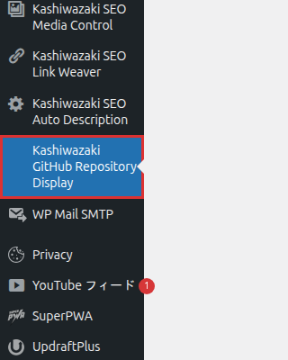

インストール・初期設定
プラグインのインストールから初期設定、GitHub Personal Access Tokenの登録まで、ステップバイステップで解説します。
インストール方法
プラグインファイルのアップロード
プラグインファイルを /wp-content/plugins/ ディレクトリにアップロードします。zipファイルを WordPress 管理画面の「プラグイン > 新規追加 > プラグインのアップロード」から取り込むか、FTP/SSH 経由でディレクトリを直接配置してください。
プラグインの有効化
WordPress 管理画面の「プラグイン」一覧から「Kashiwazaki GitHub Repository Display」を探し、「有効化」をクリックします。
管理メニューの確認
有効化に成功すると、WordPress 管理画面の左メニューに「Kashiwazaki GitHub Repository Display」項目が追加されます。ここから設定画面にアクセスできます。

dashicons-github アイコンが目印です。WordPress 管理画面サイドバーの「ツール」より下に追加されます。
管理画面の構成
設定ページは4つのタブに分かれています: 基本設定 / バッジ設定 / デザイン設定 / キャッシュ管理。各タブで設定できる項目の概要は以下のとおりです。
基本設定
GitHub トークン・デフォルトユーザー名・キャッシュ時間・詳細ページベースパス・ボタンラベルを設定します。
バッジ設定
16種類の shields.io バッジの中から、カード表示で有効化するバッジを個別に選択できます。
デザイン設定
カード表示のカラー・角丸・余白・シャドウ・ホバー効果をカスタマイズします。
キャッシュ管理
追跡中のリポジトリ数・最終更新時刻の確認、およびキャッシュの手動クリアが可能です。
初期設定手順
デフォルトGitHubユーザー名の入力
「基本設定」タブを開き、デフォルトGitHubユーザー名を入力します（例: TsuyoshiKashiwazaki）。ショートコードで user 属性を省略したときに、この値が自動的に使用されます。
GitHub Personal Access Tokenの登録
GitHub Personal Access Token を発行し、「基本設定」タブの入力欄にペーストします。トークンは暗号化せずオプションテーブルに保存されるため、共有環境では取り扱いに注意してください。
トークンなしでも動作しますが、GitHub API のレート制限が 60 req/h → 5000 req/h に緩和されます。public_repo の read スコープのみで十分です。
キャッシュ有効期限の設定
キャッシュ有効期限を 1〜24 時間の範囲で設定します（既定値は 6 時間）。開発中やリポジトリの更新頻度が高い場合は短く、運用中の安定したリポジトリを紹介する場合は長めに設定すると効率的です。
設定の保存
画面下部の「変更を保存」をクリックします。以降、ショートコードを記事中に貼り付けるだけでリポジトリ情報が表示されるようになります。
Personal Access Token は GitHub → Settings → Developer settings → Personal access tokens → Fine-grained tokens から発行できます。github_pat_* / ghp_* どちらの形式にも対応しています。
詳細ページ機能を使う場合、プラグイン有効化後に WordPress 管理画面の「設定 → パーマリンク」で「変更を保存」を1回クリックして、リライトルールをフラッシュしてください。これを行わないと詳細ページの URL が 404 になる場合があります。